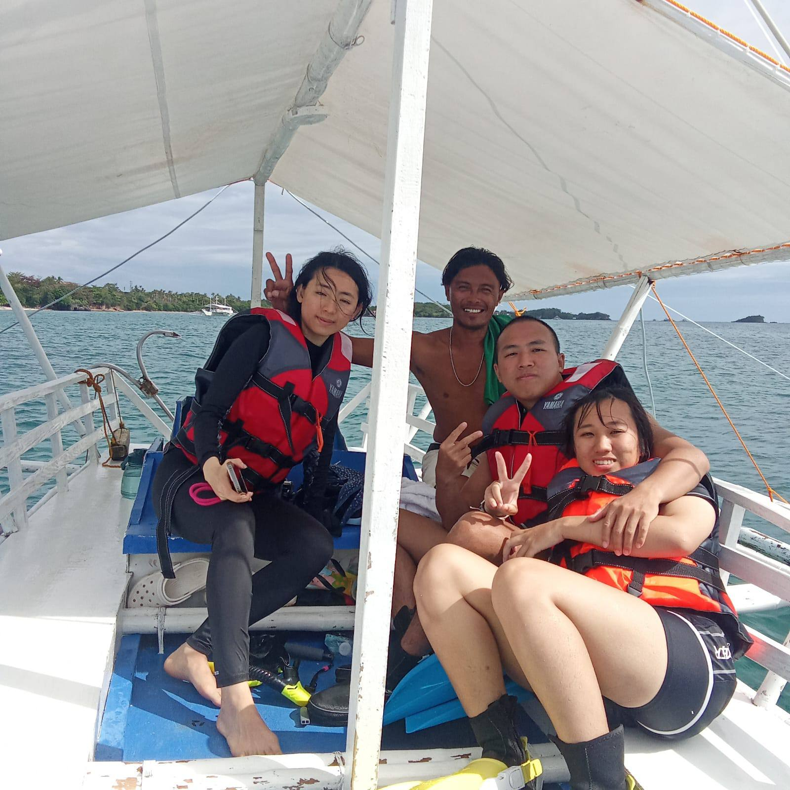

Malapascua Island is one of the world's best diving destinations — home to the famous thresher shark dives at Kimud Shoal, crystal-clear snorkeling reefs, and some of the friendliest locals in the Philippines. Getting there takes a little planning, but it's absolutely worth it. As someone who lives on the island, I'll walk you through exactly how to make the journey as smooth as possible.
Overview of the Journey
Malapascua Island is located off the northern tip of Cebu Island, about 70 km from Cebu City. There is no airport on Malapascua — all visitors arrive by boat from Maya Port in Daanbantayan. The total travel time from Mactan-Cebu International Airport is approximately 5–6 hours by public transport, or a more comfortable journey by private transfer.

Option 1 — Private Transfer (Recommended)
If you want the easiest, most stress-free journey — especially if you're arriving with dive gear or traveling as a couple or group — a private transfer is the way to go. We arrange this for all our guests.
Airport → Maya Port (Private Car)
We arrange a private air-conditioned car to pick you up from Mactan-Cebu International Airport (CEB) and drive you directly to Maya Port in Daanbantayan. No bus terminals, no transfers, no waiting. Travel time is approximately 3.5–4.5 hours depending on traffic.
Maya Port → Malapascua Island (Private Boat)
From Maya Port we arrange a private outrigger boat (bangka) directly to Malapascua Island. The crossing takes about 30–45 minutes across calm, beautiful waters. We can time this to suit your arrival flight.
Just message me on WhatsApp with your flight arrival details and I'll arrange everything. It's the same contact for your dive booking — one message, everything sorted.
Option 2 — Public Transport (Budget Option)
If you're traveling on a budget and don't mind a longer journey, public transport is absolutely doable. Here's the step-by-step route:
Airport → North Bus Terminal, Cebu City
From Mactan-Cebu International Airport, take a taxi or Grab (ride-hailing app) to the North Bus Terminal (sometimes called the Northern Bus Terminal) in Cebu City. This costs around ₱200–400 and takes 45–60 minutes, or longer during peak traffic hours. Alternatively, take the airport shuttle bus to the terminal for a cheaper fare.
Cebu City → Maya Port (Ceres Bus)
From the North Bus Terminal, board a Ceres Bus bound for Maya (also signed as "Maya via Daanbantayan"). The journey takes approximately 4–5 hours. Buses depart regularly from early morning, usually starting around 4–5 AM. The fare is approximately ₱180–250 per person. Sit on the right side of the bus for sea views on the way up!
Maya Port → Malapascua Island (Public Ferry)
From Maya Port, walk to the ferry terminal and board a public outrigger boat (bangka) to Malapascua Island. Boats run regularly throughout the day and the crossing costs around ₱100–150 per person. The journey takes 30–45 minutes. See ferry schedule details below.
Maya Port to Malapascua — Ferry Schedule
Public ferries from Maya Port to Malapascua Island depart regularly throughout the day, usually from early morning until approximately 5–6 PM. Schedules can vary depending on weather and demand, so always aim to arrive at Maya Port with plenty of time to spare.
- First ferry: Approximately 6:00–7:00 AM
- Last ferry: Approximately 5:00–6:00 PM
- Journey time: 30–45 minutes
- Fare: Approximately ₱100–150 per person (public boat)
- Frequency: Every 30–60 minutes when busy, less frequent off-season
If you miss the last public ferry from Maya Port, you'll need to either hire a private boat (expensive) or stay overnight in Maya. Aim to arrive at Maya Port by 4 PM at the latest, and earlier if possible.
Insider Tips from a Local
🌅 Arrive the Day Before Your Dive
Thresher shark dives at Kimud Shoal depart at 5:30 AM. If you want to catch the morning dive on your first day, you must arrive on Malapascua Island the day before. Plan your travel accordingly — this is the most common mistake first-time visitors make.
🧳 Travel Light if You Can
The public ferry is a small outrigger boat. While they can handle bags, very large luggage can be awkward. If you're bringing lots of dive gear, a private boat transfer is much more practical.
📱 Download Grab Before You Arrive
Grab (the Southeast Asian equivalent of Uber) is available in Cebu City and is much cheaper and more reliable than negotiating with taxis. Download and set it up before you land.
🌧️ Check the Weather
Ferry services can be suspended during bad weather, particularly during typhoon season (June–November). Always check the forecast and have a contingency plan if you're traveling during these months.
🏝️ Book Accommodation in Advance
Malapascua is a small island with limited accommodation. During peak diving season (November–May) rooms fill up quickly — especially on weekends. Book at least 2–4 weeks ahead.
Frequently Asked Questions
How long does it take to get to Malapascua from Cebu City?
By public transport expect 5–6 hours total: 45–60 minutes airport to North Bus Terminal, 4–5 hours Ceres Bus to Maya Port, then 30–45 minutes by ferry to Malapascua. By private transfer the journey is similar in time but significantly more comfortable.
How much does it cost to get to Malapascua?
By public transport: approximately ₱200–400 (taxi to terminal) + ₱180–250 (Ceres Bus) + ₱100–150 (public ferry) = around ₱500–800 total per person. Private transfers are more expensive but include door-to-door comfort. Contact us for a quote.
What time does the last ferry leave Maya Port?
Public ferries typically run until around 5–6 PM from Maya Port to Malapascua. Aim to be at the port by 4 PM at the latest, especially during off-peak times when boats may be less frequent.
Is there an ATM on Malapascua Island?
There is limited ATM access on Malapascua. It is strongly recommended to withdraw enough cash in Cebu City before traveling. Most businesses on the island are cash-only. GCash (Philippine mobile wallet) is accepted by some vendors.
Can I bring my dive gear on the public ferry?
Yes, but the public outrigger boats are small and space is limited. Large equipment bags are manageable but not ideal. For comfort and safety of your gear, a private boat transfer is recommended for divers with full equipment sets.